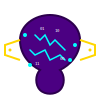

The Parsian Bridge
Disconnected
Setup Instructions
Open VS Code with The Parsian extension installed
Run "The Parsian: Connect to Browser Extension" command
Log in to your preferred AI service (ChatGPT/Gemini) in this browser
This extension will automatically connect to VS Code
Connect to VS Code